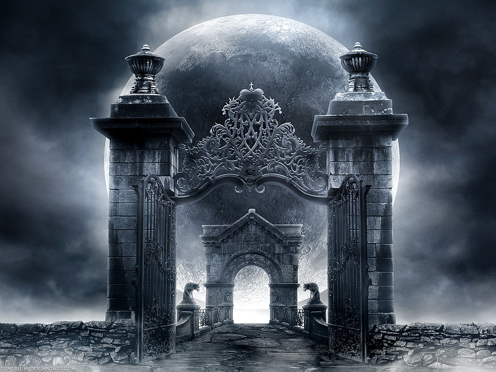

На уровне тонких тел в организме человека есть 10 врат, которые в медитативном состоянии можно спокойно обнаружить на полевом уровне, медитатируя на области анатомического соответствия. Пример,- в шавасане войти в медитативное состояние, сосредоточится на области пупа, и «пойти от пупа в направлении к левой почке, выйти на 1-е ворота. Смотрим, в каком они состоянии, если есть разрушения, то починить ворота, при починке этих ворот можно использовать мантру БэА. Ворота должны быть открыты створками наружу. Если ворота закрыты, значит, есть блокировка и энергия в организм не поступает, а левая почка это «сорока белобока», которая заведует распределением энергии в организме. За воротами должны стоять стражники, если их нет – найти, куда они разбежались, и вернуть на место. Также там должен быть табун лошадей, это ваш менталитет, ваши мысли, выпустить их попастись и потом вернуть назад. Если около ворот горят факелы, — это сгорают ваши неиспользованные таланты и способности,- факелы необходимо потушить. На створках ворот должен находиться лев. Над воротами написать,- «истинная Вера». Поискать и найти под воротами закопанные лампы. Смотрим структуры ламп. Если лампа металлическая, то применяем мантру, — «Все металлы – по месторождению», если лампа стеклянная, положить лампу на водный берег, пускай вода превратит стекло опять в песок. Найдя свою(и) керамическую лампу потереть ее, тем самым вызвать духа,- это ваш помощник в жизни и тонком мире, пообщаться с ним, узнать как его зовут, какой мантрой его призвать, каковы его сферы деятельности, границы возможного, и т.п. на сколько хватит фантазии вашего общения, и использовать духа и полученную информацию в жизне. Медленно и спокойно выйти из медитации и вернуться в обычное состояние.
Далее в таблице идет перечень врат. Незаполненные области таблицы надо самостоятельно проработать, это ваша личная работа на развитие.
Утром, как проснулись, встать лицом на запад. Руки вверх, прогиб назад, третьим глазом сказать “Приветствую Силы пришедшие со мной на Землю”. Наклон вперед – в падахастасану, мантра — «прости мать сыра земля, чем я тебе досадил, чем я тебе навредил». Встаем, поворот на 90 грд против часовой стрелки, повторяем, далее опять поворот против часовой стрелки на 90 грд… после 4х ворот поворот на 45грд против часовой стрелки, а деле опять повороты на 90грд.
Врата восстанавливаются следующим образом.
- Ставим 1/2 литровую банку на пуп. Взять кусочек черного, ржаного хлеба (или же кусочек кислого яблока, главное, чтобы была кислая среда), вставить в нечетное количество спичек от 3 до 7 по своему усмотрению, поджечь их и поставить хлеб на пуп, а сверху банку. Лежим расслабленно до тех пор, пака банка сама не отпадет. Во время процесса держания банки смотрим, что происходит с воротами, и с соответствующими анатомическими системами организма. Хорошо вытягивает различных подселенцев,- духов и сущностей из органов и ауры.
- Находясь в падмасане или в ваджрасане, взять клубок чистой шерсти. Крутить его между горизонтально расположенными ладонями на уровне солнечного сплетения длительное время. После этого лечь на этот клубок пупом(обнаженным пупком), и расслабиться. Лежать, дождавшись, пока не пойдет активная пульсация по телу, это показатель процесса восстановления и набора силы. Очень хорошо, а периодически и необходимо делать это на открытой земле.
- Курмасана. (Поза черепахи)
| № | Анатомическое соответствие. | Блокирующий фактор | Сторона света | Что должно быть над вратами |
| 1е | Левая почка. | Алчность. | Запад | Истинная Речь |
| 2е | Грудина. | Коварство. | Юг. | Истинная Память |
| 3е | Правая почка. | Страх. | Восток. | Истинный Труд |
| 4е | Гениталии. | Лож. | Север | Истинное сосредоточение
|
| 5е | Левая нога, толстый кишечник, левое яичко, яичник. | Тупость. | Северо-запад. | Истинное действие |
| 6е | Селезенка, поджелудочная, левое легкое. | Жестокость. | Юго-запад | Истинная мысль, справедливость |
| 7е | Печень, желчный пузырь, правое легкое. | Жажда власти. | Юго-восток | Истинное распознавание, мужество |
| 8е | Толстый кишечник, тонкий кишечник, правая нога, правое яичко, яичник. | Жажда славы. | Северо-восток | Истинные средства жизни |
| 9е | Перикард | Бесчестие. | Зенит | |
| 10е | 3х обогревателей | Бесстыдство | Надир |
Надпочечники –это органы достоинства, это венец смелости, житейской мудрости.
Достоинство — это: честь + совесть + благородство.
Светлый Дух — это: интеллект + благородство + честность.
Почки – органы учения. Хранители первородной энергии которую дал род.
Закон почек – не желать, а быть.
Левая почка – сосредоточенность, деловитость
Правая почка – одухотворённость.
Почки любят: гармонию во всём, тепло, мягкость, чистоту и спокойствие эмоций, любовь, творчество и равновесие(души и духа, инь и ян …)
Нравственность – это Внутреннее, Мораль – Внешнее. Гармония будет тогда, когда выровняется Внутреннее с Внешним – тогда не будет в телах токсинов и ядов.
Если нет внутреннего равновесия, тогда нарушается гармония, идут перекосы в ментале и в астрале. Тогда преобладает однобокость. Или – одухотворенность, когда мы только – желаем, и возмущаем астрал. Или – деловитость, когда мы торгуемся, торгуемся эгоистически в свою выгоду.
В ментале неразбериха, несобранность, хаос вплоть до паники, при подключении эмоций включается истеричка, зашкаливает и кидает по сторонам и областям внутреннего мира. Этот процесс идёт до тех пор, пока с вас не снимут всю энергию, после чего, как правило, опускают в депрессию.
Депрессия — это полное бессилие, состояние с очень низкой энергетикой, когда человек теряет всякую надежду достичь своих целей своим способом,- по типу и волки сыты и овцы целы. У кого депрессия — тот уже торговался и проторговался, сделка, которая была заключена ранее — не сыграла. Торговля это разновидность деловитости. Идёт торговля,- «я не буду пить, курить, а, ты отпусти «боль». Через 5мин. «боль» не проходит — и идёт депрессия. Чем больше и качественнее идёт торговля,- тем больше и качественнее идёт депрессия.
Депрессия — это полное подавление чувств.
Причины депрессии:
1 — уход от действительности, иллюзии вместо решения проблем.
2 — утрата прежнего образа жизни, дурной привычки, части тела. Человеку нужно позволить испытать горечь от утраты (…страх потерять работу, страх уйти с работы, страх расстаться…).
Нужно уметь оплакивать любую свою утрату, тогда уйдёт депрессия. Как весной половодье всё затопило, потом сошло, — и всё расцвело, но теперь на «чистом».
Когда идёт торговля, нужно определиться со всеми своими долгами и представить, что они растворяются в сиянии чудесного света. Кто видит ангелов хранителей, наставников… – передать им свой энергоинформационный блок.
Йога как гармонизация. Не подавлять, не бороться со стихиями, не отказаться от их проявления, не выкидывать — а познавать их. Это уровень. Определить какие стихии преобладают в излишке, каких не достаёт, и гармонизировать их. Когда стихия в излишке – она сверх нормы проявляет себя, стремится на свободу, по этому вы: злитесь из злости, боитесь из страха, … вы нервничаете, не находите себе места.
Это удача, так как сама стихия говорит вам, — смотри на меня, что есть я, и как я работаю, как проявляю себя, каков мой норов, и каково моё явление и влияние. Смотри и осознай свой автоматизм от меня. Сейчас самый подходящий момент познать меня в полноте моей сути, научится управлять мной и использовать для своих нужд, я не враг, я помощник. Когда я успокоюсь или уйду, меня не будет здесь и сейчас, и ты меня не увидишь и не узнаешь и не поймешь. Я часть мира, которая движет миром, ты упустишь момент в расширении виденья и осознания мира, в тебе останется больше автоматизма чем могло бы быть.
Депрессия – состояние с очень низким уровнем энергии, когда вся энергия куда-то ушла, или вы её спалили, или её кто-то снял с вас. Это как ил, который осаждается на дно. Депрессия – это погружение на самое дно в толщу ила, поэтому она сопровождается тяжелыми, довлеющими состояниями, из которых очень трудно выбраться из-за отсутствия сил. Но надежда ищет выход, вверх идти уже нечем и не с чем, путь лишь в низ – поэтому тяга к суициду. Депрессия – это опускания в ил ниже уровня муладхары, когда в человеке умирает тяга к жизни. А ниже муладхары – чакра радости, ил депрессии накрывает и высасывает эту чакру и её потенциал. Трудно выйти, не приложив должных усилий. Надо искать куда, кому и почему ушла ваша энергия, ваш потенциал. Найдя – верните. Депрессии бывают из-за торгов с душой, заключили сделку – отдали энергию, не удержали схимну … Чарка радости – солнечна, чакра дающая энергии солнца(манипура-чакра берущая энергии созвездий через солнце). Золото – солнечный метал, поэтому для целительства золото надо носить в жопе, на другом месте оно превращается в зло.
В астрале — неконтролируемые эмоциональные вихри, которые грабят ваши почки и сопутствующие органы. Вас кидает по состояниям от эмоции к эмоции, накаляет до белого каления, потом взрыв и выплеск. Вами проигрались и вас ограбили, опустошили. В эти минуты вы беззащитны, вас можно брать голыми руками, программировать и лепить из вас что угодно.
Тут нужно медитировать на штиль и нулевое состояние, и через него восстанавливать гармонию, — т.е. искать и исправлять нарушения, менять мировоззрение, иначе бесконечная игра, в которой вы всегда в проигрыше.
Наркотики, алкоголь и сигареты, открывают дверь внешним магам, которые высасывают энергию почек.
А вот когда в бытии – это совершенство; захотели – сделали, сделали – захотели…
Ни симпатии, ни антипатии, ни чувства сожаления, — иначе возмущаешь астрал. А абсолютное спокойствие, ни единой мысли, — иначе ”работаешь” на своих почках. – вот техника безопасности.
Страх любит поселяться в почки, потому что страх – лучший учитель современной цивилизации.
Вот техника. – Чему ты(страх) пришёл меня научить? Посмотреть в лицо страху, пропустить через себя и не обернуться – тогда сила.
Страх и алчность – учат человека быть мудрее животного. Развитие и движение – это и есть освобождение от страхов. Движущая сила испуганного человека – страдания. Если страдаешь – ищи страх. Меня не любят — основной страх женщины, а не мужчины, иначе мужчина не мужчина – отсюда идут болезни. Мужчина боится, что ему откажут.
Каким ты был, таким остался, — это штамп, программа подсознания, останавливающая развитие – необходимо определить, т.е. вывести в осознание, и снять все штампы в себе.
«АРЕС НАМАСКАР»
Комплекс марса, наработка мужских качеств: Быстрота в принятии решений Вера в себя, Дух, Индивидуализм, Мужественность, Наличие собственной позиции, Независимость Сила, Личность, Лидер, Способность защищать свои взгляды, Умение полагаться только на себя
1. Випарита карани.10мин. (Вход, выход и фиксация не дергаясь, без толчков и рывков )
2. Пашимоттанасана. растечься в позе. Энергия солнечное сплетение — пуп
3. Бхуджангасана. внимание на 4-5 поясничный позвонок.
4. Сарпасана.
5. Ардха салабхасана + салабхасана. Внимание поясница.
6. Дханурасана.
7. Мусульманин. (в ваджрасане раздвинуть колени в стороны, наклониться вперед, грудью коснуться пола. Отдых)
8. Сиршасана (кто не может, сагвангасана — березка). Вн.- горло
9. Матсиасана. Внимание горло
9.1 (Ардхаматсиендрасана, Б.Б. Маюрасана Халасана Чакрасана – дополнительные позы)
10. Падмасана. Созерцание, тишина и безмолвие в себе, добиться этого.
11. Шавасаша. 10-20 мин
Вдох — познаём мир. Задержка вдоха — целительство. Если дольше зад. вдоха — вы целитель(на данный момент времени)
Выдох — отдаём. Задержка выдоха — творчество. сила воли, выносливость. Если у вас длиннее задержка выдоха — вы учитель.
ТАЗ – ВОРОН,
БЕДРО – ЛЕБЕДЬ,
КОЛЕНО — ГРИФОН,
ГОЛЕНЬ – МАГОЛ,
ЛОДЫШКА-СИРИН
ПОДЪЁМ СТОПЫ – СЫЧ,
СТОПА (подошва)- СОВА,
ПАХ — РОДОВЫЕ ТРАВМЫ
середина бедра, внутренний бок — ДЕПРЕССИИ
бедро у колена, внутренний бок – АГРЕССИИ
Безответственность разрушает Дух, а лживость – Душу.
Почечный комплекс.
- Боковое дыхание. Стоя. Ноги параллельны, на ШП. Со вдохом руки подымаем в стороны до горизонтального положения. С выдохом наклон вправо, левая рука вверх, правая внизу. Перенести вес на правую ногу. Дышим свободно. Вдох на растянутый бок, выдох на сжатый бок. 10 дыханий. Вернулись в ИП и выполнили в др. сторону.
- Кошка – собака. Дыхание парадоксальное. Внимание по позвоночнику, или на копчик.
- Пр.4, — отжимание на задержанном вдохе. вн. — сердце.
- Зигзаг вн. – почки.
- Суптападанджустасана (лежа цикл).
- Скрутка, лежа с одной и с двумя ногами.
- Бхуджангасана (кобра) вн. – почки, 4-й поясн. позвонок.
- Пашимоттанасана.
- Бабочка с наклоном. Руки сверху, взяться за стопы и пальцы.
Звезда. — Руки снизу, под колени.
- Парсфотанасана. Намасте сзади, наклоны вперед и к внешней стороне колена. И с разворотом стопы в сторону.
- Сиранджустасана. Ноги широко. Наклон, лоб – стопа.
- Ласточка.
- Ардхачандрасана.
- Падахастасана.
- Качалка.
- Ардхаматсиендрасана (скрутка сидя) зд вдоха.
- Бхуджангасана.
- Дханурасана.
- Халасана. (Плуг)
- чакрасана. (Мостик)
- Шавасана, — расслабление.
СИТУАЦИЯ – ЭТО СИЛА РАЗВОРАЧИВАЮЩАЯ ПРИЧИНУ В СЛЕДСТВИЕ. Ситуация, которая бросается вам в глаза и заставляет обратить на себя внимание – это знак, признак развивающейся причины, вы ещё не участник, а только наблюдатель. Это контур будущих событий. ВСЕ СИТУАЦИИ ДАЮТСЯ ДЛЯ ТОГО, ЧТОБЫ ВЫ ЧТО-ТО ПОНЯЛИ. Мысленно задать вопрос, пусть ситуация даст ответ и пусть ситуация даст ключевое слово. Задать вопрос, далее, отпустить от себя(уровень психики), и не вспоминать. Вопросом вызывается не причина, а только информация о ней. Не въезжать. Я просто смотрю причину, я не вхожу в чужие потоки причинно – следственных связей, т.е. — в потоки тех ситуаций принадлежащих другим, через которых нам показывают. Ответ бывает сразу или от 1 до 3-х суток, — далее не ваше. В это время следить за ключевыми словами. Если пошли скандалы, ругань – стоп, остановись, — значит, уже есть ошибка в этом направлении. Не ищите знаки, не ходите за ними, — они сами бросаются в глаза. Они привлекают. Не надо искать приключений на свою голову – ты здесь и сейчас. Будь без эмоционален. Решать проблему мыслью – в чувства не пускать. Если пустили в чувства, начали переживать – то тут же завертелось колесо той жизни, которую начали переживать. Но если тебе что-то показали, – надо решать ситуацию, чтобы не было печальных последствий. Когда ты становишься свидетелем, задавай вопрос, — Меня предупреждают? … Благодарю за предупреждение! Все знаки отрабатывать легко, не западать. Не искать знаки, они сами вас найдут. Не искать, того чего нет. Когда хотите решить какое-то дело(и, например сомневаетесь), то заранее оговаривайте: — Я (сомневаюсь), хочу сделать пробный маленький шаг(или большей). Покажите мне, хочу посмотреть, как пойдёт дело. Задали вопрос, — ждёте знаки, до 3-х суток.
Ситуацию не напрягать. Быть – наблюдателем.
”Кто насилует обстоятельства — того обстоятельства насилуют. Кто уступает обстоятельствам – тому обстоятельства уступают”. Не мешать процессам, а делать то, что естественно в данной ситуации. В ТВОЮ МНОГОМЕРНОСТЬ ВОЙДЁТ ТОЛЬКО ТО, — НА ЧТО ТЫ ОТРЕАГИРОВАЛ.
Осознание – это видение своих возможностей.
Интересы капсулы в расширении сознания нулевого.
Если у Вас периодически повторяются ситуации и/или по ситуациям возникают: сомнения, вопросы, непонятки, неопределённости, волнения, беспокойства или что-то из тому подобного, — необходимо выйти на Шестого предка в Родовой капсуле и работать с ним. Это Ваш Ведущий по Пути Развития, он выстраивает Вам ситуации для прохождения. Проходя ситуации Вы нарабатываете опыт, который передается в Вашу Капсулу(Род). Капсула получает новый опыт и энергии, которые Вы в процессе реализации проблемных ситуаций транслируете в Купсулу-Род. Тем самым и Вы растете, и Род растёт, эволюционирует.
Можно конечно и не идти в развитии через свой Род. К примеру, — человек подъэгрегорный автомат. Он может быть под цивилизацией, или под религией, или под другой какой-то структурой, тогда он транслирует энергию в чужой эгрегор, боженьке или соседу, и тем самым развивает его. Такой персонаж именуется – служебная овца. Дело Ваше это Ваш выбор.
Ситуация считается повторяющейся, так же в том случае, если сценарий разворота внешне различный, но внутренне наблюдается схожесть по эмоционально-чувственным проявлениям. Однотипный сценарий разворота и проигрывания эмоций и чувств в который Вы упираетесь, или который Вас ломает и загоняет в подвешенное состояние.
Аналогично с информацией. Разные персонажи в разных условиях Вам дают однотипную информацию, тем самым как бы ставят вас перед фактом.
Здесь, на Земле, в данном воплощении, Вы и Капсула едины, Вы одно. Вы и Капсула пришли решать сюда одни и те же задачи, задачи на развитие.
Шестой бегает по астралу, договаривается с другими, чтобы эта встреча, это событие произошло. Вкладывает силы. Он выстраивает для Вас Ситуацию. Если нет ситуации или Вы её избегаете, то и развитие исключено. Из Вас не вырастит профессионал, если вы не будете нарабатывать опыт. В пустоте нет развития и быть не может, в пустоте рождается иллюзия-самообман.
Чтобы пошло развитие необходима разность потенциалов.
Вы и Капсула эволюционируете одновременно, если конечно Вы проходите ситуации на духовное развитие.
Если вы ситуацию проваливаете, ситуация повторяется в более тяжело-проблематичном варианте. То есть Шестой, для того чтобы Вы обратили своё внимание на проблему и начали заниматься ей — и решать именно её (нарабатывать опыт, а через него расширять своё осознание), вынужден сделать ситуацию до такой степени более-проблематичней, чтобы она не давала Вам спокойно жить, была всегда у Вас “перед глазами” и назойливо маячила. Вас будут тыкать носом в одну и туже проблему, пока вы не разрешите её правильно, а опыт уйдет на подсознание. Решение проблемы лежит выше уровня проблемы. Решить проблему не значит съехать с темы, скинуть её на кого-то или оставить “на-потом”, а(!) — увидеть её с более высокого уровня осознания и реализовать. Это возможно только тогда, когда Ваше осознание расширится и выйдет за границы понимания проблемы, т.е. за границы своего уровня развития на тот момент времени, когда проблема для Вас является проблемой, т.е. тогда, когда проблема не разрешена. А это, зачастую возможно только тогда, когда Вы набьёте достаточно шишек, необходимых, для того чтобы отказаться от созданных Вами границ, шаблонов, стереотипов, приоритетов …
Бывают случаи, когда, к примеру; Сущность высокого уровня была приглашена Капсулой совместно проработать какой-то общий для обоих уровень развития, общий уровень задач и проблем в которых есть у обоих проколы по Пути. Тогда Сущность по жизни решает как общие с Капсулой-Родом задачи, так и свои личностно-индивидуально-сущностные задачи, которые не входят в рамки задач капсулы. Если проблема Сущности не входит в ранг проблем Капсулы, то эта проблема ничего не несёт Капсуле для развития. В таком случае Капсула не ведёт и не защищает человека по пути решения проблемы. Такие проблемы Сущность решает самостоятельно, без участия Капсулы-Рода. Поэтому, необходимо выяснить у Старшего в Роду, является ли эта проблема-ситуация общей для Меня и Капсулы, или же, это сугубо моя индивидуальная проблема. Если Проблема общая, то вы просите-договариваетесь вести Вас, помогать, защищать, подсказывать, давать знаки на Пути и т.п., на что у Вас мозгов и интуиции хватает …
Если эта проблема индивидуально Ваша, то вы или отпускаете Шестого, или же можете предложить Капсуле поучаствовать в “вашей жизне-проблеме-ситуации” на правах и обязанностях: — (и тут вы грамотно составляете договор с Капсулой о сотрудничестве и взаимопомощи или + ещё что-то, на что у Вас достаточно мозгов и интуиции, то бишь сахасрары, — это Вам ключ к развитию сахасрары и манипуры, как своей так и Капсулы. К примеру, если у Вас слабая манипура, а у кого-то из членов Капсулы она сильная. То можно попросить Капсулу, и данного члена Капсулы, воспользоваться его манипурой для наработки своей манипуры, и укрепления его манипуры, в этом процессе развития через ситуации. Ну или что-то тому подобное … )
И так пример:
Тема с женщинами(для мужчин, для женщин наоборот).
У Вас очередная дама, уже 125 по счёту. И тут Вы вдруг как-то странно себя почувствовали, может быть взволновались или заподозрили, что тут что-то не так, не с ней, не с Вами, а вот как-то всё же не так, ну, к примеру, — “не так по жизни”, или ещё там как-то не так … Сколько можно, мне уже 30 лет, а тут такое — 125 баба по жизни, что за херьня такая, когда же будет толк, когда же будет именно то, что мне надо.
У Вас и у Капсулы может быть достаточно высокий уровень запросов, настолько высокий, что для реализации оных, Вам необходимо раскрыть и реализовать в себе настолько обширный и многоуровневый комплекс, который невозможно реализовать сразу с одним партнером. А если Вас сразу подвести к той единой неповторимой, то она Вас в таком виде, в котором Вы есть сейчас, просто “не увидит”, не поймёт, не узнает, не признает что вы для неё именно тот единый уникальный неповторимый. И Вы её тоже не поймёте, и не примите, — в Вас не достаточно развито: видение, понимание, осознание, не раскрыта анахата и/или другие чакры, не проработаны профессиональные общества цивилизации и Варны. Вы не Пуп Земли. На данном своём уровне вы не стоите её мизинца, а так себе, Вы для неё — что-то посредственное, при всём своём великом суппер-Эго. Поэтому вам и подводят по жизни поэтапно многих, достойных Вас на данный момент, на данный уровень вашего развития понимания и осознания. Главное работать над своим развитием в паре со своими Силами, не нарушать природные законы, законы Рода и законы Пути, законы отношения мужчины и женщины. Тогда на этом Пути Силы Вас защищают и берегут, ведут Вас аккуратно и заботливо, — если Вы конечно с ними “на Вы”.
Помните что ситуация всегда для двоих или более, для каждого в ней есть свои дары, поэтому чтобы не обобрать другого, не разрушить его, Вам необходимо соблюдать законы духовного развития, ведь ситуация не только для Вас. Не нападай. Не осуждать себя. Ни когда не рвать по живому. Исключение составляет Хищник, хищнику надо дать “между глаз”.
Примерные вопросы Шестому.
1.Эта проблема-ситуация общая для меня и Рода?
2.Чакральная проработка, энергии стихии.
3.Законы цивилизаций, 3й мир
4.Профессиональные качества, 2й мир
- Варны. Идей, концепции, идеология, культура, этикет, мораль 5й мир
6.ещё что-то …
Теперь как работать.
Вкратце.
Возьмите проблему-ситуацию. Соберите всех персонажей, с которыми Вы имели контакты-отношения по данному типу ситуаций.
1.Распишите по каким чакрам у Вас с каждым оппонентом шло взаимодействие (если оппонент приходил к Вам в дом и ситуации разворачивались там, то тут определённо замешана муладхара, и т.д.). Конфликты – один из ключей к проблеме. Сотрудничество тоже даёт развитие, но менее болезненное. Работайте. Снимайте стереотипы, избавляйтесь от шаблонов, ищите законы, и нарабатывайте серое поведение по чакрам. Проработайте тему энерго-вампиризма. Всё что вам не нравится в других, всё что Вас: не устраивает в других, не приемлет, вызывает отрицательную эмоциональную реакцию – это Ваша проблема, а не его. Отцепитесь от него(закон “не западай”), он Ваш друг, временный учитель на физике, он показывает Вам то что у Вас спрятано внутри. Как знать, может Вы это несёте в себе из прошлых жизней. Вашим Силам видней, что у Вас внутри, они прекрасно видят, что Вам мешает, что Вам преграждает Путь развития. Интересы капсулы в расширении сознания нулевого. Для того чтобы избавиться от камня преткновения надо вывести это наружу – нужна ситуация, так что Вы не один, у Вас есть помощник. Вскройте залежи. Ищите в себе автоматизм и избавляйтесь от него. Автоматизм реакций, автоматизм отношений, автоматизм взглядов, понятий и т.д. Работайте.
Вот пример работы.
В вашем поле видения появился объект, и в вас включилась некая условно-отрицательная эмоция в его адрес, или в адрес его проявления. Если Вы начинаете подавлять в себе эту эмоцию, она уходит на подсознание и усиливает собой камень Вашего преткновения, этим ходом вы проваливаете ситуацию. И так Вы будете повторять постоянно, Вас так научили. Ваш камень вырастит в гору(и, как правило, в болячку). И чтобы эту гору хотя бы “сдвинуть с места” Ваши Силы будут подводить в поле вашего видения всё более до ужаса наглый в своём проявлении экземпляр, который всё более сильнее, и более качественней будет Вас раздражать. В итоге Вы не выдержите и сорвётесь. Вы потеряете контроль и выльете из себя всё что накопили. Вы будете накапливать и срываться по жизни до тех пор, пока не поймете что это не выход, что надо работать не с проявлением, ибо такая работа никуда не ведёт, это замкнутый круг. Надо научиться отпускать то, что должно выйти. И Вы учитесь грамотно выводить и отпускать так, чтобы “не убить” другого. И на каком-то этапе Вы понимаете, что надо работать с причиной, которая создает в Вас этот закупоренный энергопотенциал, и надо перекраивать себя не в реакции, а в: приоритетах, шаблонах, понятиях, законах и т.п. Это будет первый этап в прохождении однотипных ситуаций. Следующий этап это – научиться выходись осознанием на стержень, на который накручивается энергия, избавиться от него, и поменяв поведение-проявление себя на более грамотное, заложить его себе на подсознание.
Ситуация считается пройденной, если Вы:
-а. познали законы и как они работают в мире
-б. изменили поведение
-в. подтвердили это в нескольких проверочных ситуациях
-г. ……………
Оппонент может отрицательно, как входить в поле вашего видения, так и нет. Из двух бомжей к одному у Вас отрицательная реакция, к другому вы безразличны, или же он во всём своём “великолепии” импонирует Вам. Тот к кому Вы отрицательно – показывает что в Вас Есть, Ищите. Найдёте, проработаете, подтвердите и мир бомжей для Вас изменится.
2.Рапишите их по гороскопу, — это даст понимание и выход на энергии и стихии с которыми вы взаимодействовали, а значит должны были их освоить, понять законы, разобраться с нарушениями и реализовать творчески. Выходите на законы Стихий и Созвездий. Прорабатывайте гороскоп, это астральный мир, это Видение.
3.Просмотрите все профессиональные контакты, которые нес сам оппонент и те контакты, которые шли через него, т.е. новые знакомства. Изучайте структуру и законы профессиональных обществ, их дары и сиддхи.
- 4. Прорабатывайте Варны. Если чакры — это психология, то Варны- это: культура, этика, мораль. Варна сутью отражает законы отношения к своему жизненному потоку, и к жизненному потоку других. Прокол по Варне, как правило, опускает человека вниз, и, как правило, крепко и надолго. Вам не нравится “нижестоящий по Варне”, — он Вас вымораживает, он недостоин Вашего внимания, он быдло и т.п. Но он пришёл заставить Вас чиститься от этого же, а Вы его вот так. На астральном уровне Вы осуждаете, критикуете, бьёте его, — и этим проваливаете ситуацию на развития, Вы ничему не научились, Вы просто Пуп Земли.
Когда Вы, наконец-то, познаете все свои энергии, стихии, законы, наработаете необходимый опыт по ним, научитесь реализовывать их в творческом потоке на том уровне, который необходим Вам и Капсуле. Всё сольётся воедино. Вы выйдите на совершенно другой уровень сознания, осознания того, что Вам надо, для чего надо и как с этим жить. И тогда Ваши Силы подведут Вам именно ту, — так же как и Вы, единственную, уникальную и неповторимую. В ней сольются все остальные, и больше Вам никто не будет нужен кроме Вас двоих. С этого момента начинается новый Путь Развития. Путь Развития в Паре. Но это уже другая сказка ….
Случай, когда у Человека нет связи со своей Капсулой, или же эта связь очень слабо проявлена. Если Силы дают понять “Мы тут ни причём, это Ваши личные проблемы-ситуации, сам напортачил – сам и выкручивайся ….”, это значит что вы по данной ситуации взаимодействуете не со своими силами, а стоите под какими-то “левыми” силами: эгрегорами, структурами, системами, обществами, организациями и т.п., которые и рулят Вами в своих целях. Этим силам надо чтобы Вы постоянно “бились головой в одну и туже стену, которая иногда может быть разного цвета и структуры, но дело это не меняет”, — “а воз и ныне там”. Этими Силами создана иллюзия развития; 150 баб — а воз и ныне там, нет удовлетворения, нет роста, нет наработок нового опыта, нет выхода на новые энергии, стихии, законы(нет их проработки и реализации в творческом потоке). Вы определённо остановились на Пути развития, зашли в тупик и там “стоите стойлом”. Более того, на Вас сбрасывают, и вы решаете чужие проблемы, которые развивают чужие структуры. Выбор за Вами. Вы можете решать проблемы: Кришны, Христа, какого ни будь социального министерства, секты, какой-то формальной/неформальной организации и т.п. … Вас заманили в чужое болото, решать чужие проблемы. Вас заманили быть чистильщиком чужих структур. Как знать, может быть Вам пока это нравится. Это Ваш выбор, но дальше выбор уже не за Вами, здесь нет Вашей воли.
Здесь задача выйти из-под влияния чужих сил, рассчитаться с ними, реализовать хвосты, проработать законы которые Вы нарушаете, вернуть сой потенциал(который использовался чужими Силами), наладить связь со своими Силами, и развиваться соответственно интересам Капсулы-Рода и Себя.